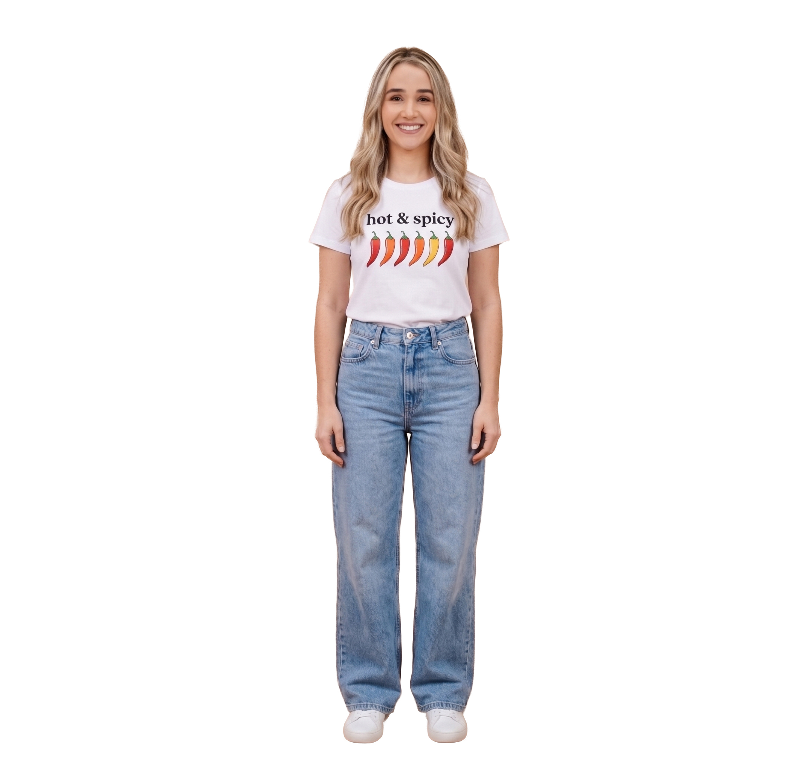

Probador Virtual
Prueba tu look antes de comprar.

Generando tu look…
Esto puede tardar entre 20 y 60 segundos
Error al generar la imagen
Prueba tu look antes de comprar.

Generando tu look…
Esto puede tardar entre 20 y 60 segundos
Error al generar la imagen